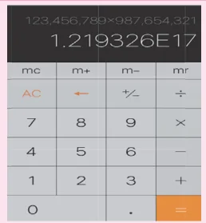
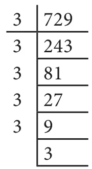
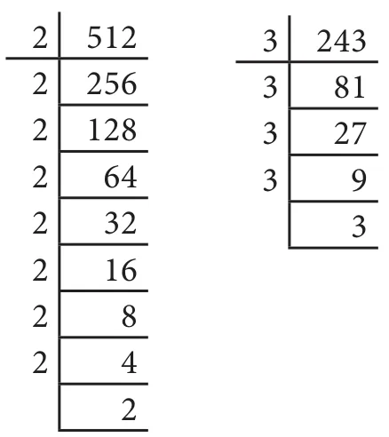

We can write large numbers in simplified form as given below. For example, \(16 = 8 \times 2 = 4 \times 2 \times 2 = 2 \times 2 \times 2 \times 2\)
Instead of writing the factor 2 repeatedly 4 times, we can simply write it as \(2^4\). It can be read as 2 raised to the power of 4 or 2 to the power of 4 or simply 2 power 4.
This method of representing a number is called the exponential form. We say 2 is the base and 4 is the exponent.
Note
The exponent is usually written at the top right corner of the base and smaller in size when compared to the base.
Let us look at some more examples,
\(64 = 4 \times 4 \times 4 = 4^3\) (base is 4 and exponent is 3)
Also, \(64 = 8 \times 8 = 8^2\) (base is 8 and exponent is 2)
\(243 = 3 \times 3 \times 3 \times 3 \times 3 = 3^5\) (base is 3 and exponent is 5)
\(125 = 5 \times 5 \times 5 = 5^3\) (base is 5 and exponent is 3)
Remember, when a number is expressed as a product of factors and when the factors are repeated, then it can be expressed in the exponential form. The repeated factor will be the base and the number of times the factor repeats will be its exponent.
We can extend this notation to negative integers also. For example,
\(-125 = (-5) \times (-5) \times (-5) = (-5)^3\) [base is '\(-5\)' and exponent is 3]
Hence, \((-5)^3\) is the exponential form of \(-125\).
MATHEMATICS ALIVE — Algebra in Real Life

In a calculator, multiplication of two large numbers is displayed as 1.219326E17 which means \(1.219326 \times 10^{17}\) where, 'E' stands for exponent with base 10.
Numbers in Exponential Form
Now, we will see how to express numbers in exponential form. Let us take any integer as 'a'.
Then, \(a = a^1\) ['a power 1']
\(a \times a = a^2\) ['a power 2'; 'a' is multiplied by itself 2 times]
\(a \times a \times a = a^3\) ['a power 3'; 'a' is multiplied by itself 3 times]
\(a \times a \times \ldots \times a\) (n times) \(= a^n\) ['a power n'; 'a' multiplied by itself n times]
Thus we can generalize the exponential form as \(a^n\), where the exponent is a positive integer (\(n > 0\)).
Observe, the following examples.

\(100 = 10 \times 10 = 10^2\)
This can also be expressed as the product of two different bases with the same exponent as,
\(100 = 25 \times 4 = (5 \times 5) \times (2 \times 2) = 5^2 \times 2^2\)
We notice that 5 and 2 are the bases and 2 is the exponent.
In the same way, \(a \times a \times a \times b \times b = a^3 \times b^2\)
Consider, \(35 = 7^1 \times 5^1\), where there is no repetition of factors. Thus, usually \(7^1 \times 5^1\) is represented as \(7 \times 5\). So, when the power is 1 the exponent will not be explicitly mentioned.
Note
- The exponents 2 and 3 have special names ‘squared’ and ‘cubed’ respectively. For example, \(4^2\) is read as ‘four squared’ and \(4^3\) is read as ‘four cubed’.
- The other name of exponent is indices. Do you remember the word ‘indices’? In Class VI, we heard of this word while applying BIDMAS rule in simplification. For example, \[\begin{aligned} 6^3 + 4 \times 3 - 5 &= (6 \times 6 \times 6) + 4 \times 3 - 5 && [\text{B}\textbf{I}\text{DMAS}]\\ &= 216 + (4 \times 3) - 5 && [\text{BID}\textbf{M}\text{AS}]\\ &= 216 + 12 - 5 && [\text{BIDM}\textbf{A}\text{S}]\\ &= 228 - 5 && [\text{BIDMA}\textbf{S}]\\ &= 223 \end{aligned}\]
Try these
Observe and complete the following table. First one is done for you.
| Number | Expanded form | Exponential Form | Base | Exponent |
|---|---|---|---|---|
| 216 | \(6 \times 6 \times 6\) | \(6^3\) | 6 | 3 |
| 144 | \(12^2\) | |||
| \((-5) \times (-5)\) | \(-5\) | |||
| \(m^5\) | ||||
| 343 | 7 | 3 | ||
| 15625 | \(25 \times 25 \times 25\) |
Example 3.1 Express 729 in exponential form.

Solution
Dividing by 3, we get
\(729 = 3 \times 3 \times 3 \times 3 \times 3 \times 3 = 3^6\)
Also, \(729 = 9 \times 9 \times 9 = 9^3\)
Example 3.2 Express the following numbers in exponential form with the given base:
(i) 1000, base 10 (ii) 512, base 2 (iii) 243, base 3.

Solution
- \(1000 = 10 \times 10 \times 10 = 10^3\)
- \(512 = 2 \times 2 \times 2 \times 2 \times 2 \times 2 \times 2 \times 2 \times 2 = 2^9\)
- \(243 = 3 \times 3 \times 3 \times 3 \times 3 = 3^5\)
Example 3.3 Find the value of (i) \(13^2\) (ii) \((-7)^2\) (iii) \((-4)^3\)
Solution
- \(13^2 = 13 \times 13 = 169\)
- \((-7)^2 = (-7) \times (-7) = 49\)
- \((-4)^3 = (-4) \times (-4) \times (-4) = 16 \times (-4) = -64\)
Note
\((-1)^n = -1\), if \(n\) is an odd natural number.
\((-1)^n = 1\), if \(n\) is an even natural number.

Example 3.4 Find the value of \(2^3 + 3^2\)
Solution
\(2^3 + 3^2 = (2 \times 2 \times 2) + (3 \times 3)\)
\(= 8 + 9 = 17\)
Example 3.5 Which is greater \(3^4\) or \(4^3\)?
Solution
\(3^4 = 3 \times 3 \times 3 \times 3 = 81\)
\(4^3 = 4 \times 4 \times 4 = 64\)
\(81 > 64\) gives \(3^4 > 4^3\). Therefore, \(3^4\) is greater.
Example 3.6 Expand \(a^3 b^2\) and \(a^2 b^3\). Are they equal?
Solution
\(a^3 b^2 = (a \times a \times a) \times (b \times b)\)
\(a^2 b^3 = (a \times a) \times (b \times b \times b)\)
Therefore, \(a^3 b^2 \neq a^2 b^3\)
Do You Know?
Ancient Tamilians have used lot of greater numbers in their day-to-day life. Refer to Kanakkathikaram written by a saint Karinayanar who lived in Tamilnadu during \(10^{\text{th}}\) century. More interestingly, they fixed a unique name for every big number. For example, 'Arpudham' means Ten crores, 'Padmam' means \(10^{14}\), 'Anantham' means \(10^{29}\) and the word 'Avviyatham' denotes \(10^{35}\).
Pingalandai Nigandu Vaipaadu, an ancient Tamil Mathematics treatise, also confirms the usage of such big numbers. It is a book of multiplication table.